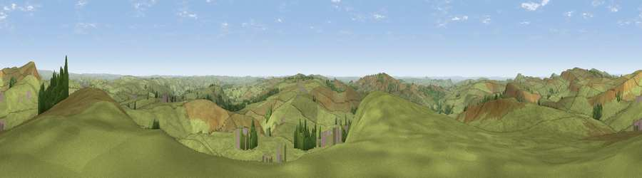

Oliver Hill
#7742 in England · top 6% of its area beats it · near FlashThe view, rendered

A 360° render of this exact spot computed from the terrain model, tree cover and land cover — summer colours, afternoon light, calibrated against photographs of famous viewpoints. Real trees, hedges and buildings will differ in detail.
The panorama
Grey silhouette: terrain skyline in each direction (720 bearings, Earth curvature and refraction included). Dashed green: skyline with trees (+15 m) and buildings (+8 m) as obstacles. Blue strip: how far the ground is visible on each bearing.
Where the view opens
Wedge length = distance to the farthest visible ground on that bearing (vegetation-aware). Rings at 10, 25 and 50 km.
What fills the view
96% grassland · 3% woodland ·
Angular shares of the visible panorama (visual magnitude), not map area. Landscape diversity 0.08 (0–1 Shannon).
Key numbers
More beautiful places nearby
The staircase of upgrades: each row has a higher view potential than everything closer. Driving times are estimates from straight-line distance, calibrated against real road routing — check an actual route before setting out.
| Place | Direction | Drive | Score |
|---|---|---|---|
| Axe Edge | NNE · 2 km | ~5 min | 69.7 |
| Viewpoint near Meerbrook | SW · 5 km | ~10 min | 73.5 |
| Viewpoint near Timbersbrook | WSW · 13 km | ~24 min | 74.4 |
| Viewpoint near Mow Cop | WSW · 19 km | ~33 min | 78.9 |
| Viewpoint near Mow Cop | WSW · 20 km | ~34 min | 80.2 |
| Viewpoint near Harthill | WSW · 53 km | ~74 min | 80.5 |
| White Brow | NW · 58 km | ~80 min | 82.9 |
| Viewpoint near Little Wenlock | SSW · 71 km | ~94 min | 84.2 |
53.20524, -1.96103 · source: osm peak · position refined by local search. Computed location — check access rights before visiting.